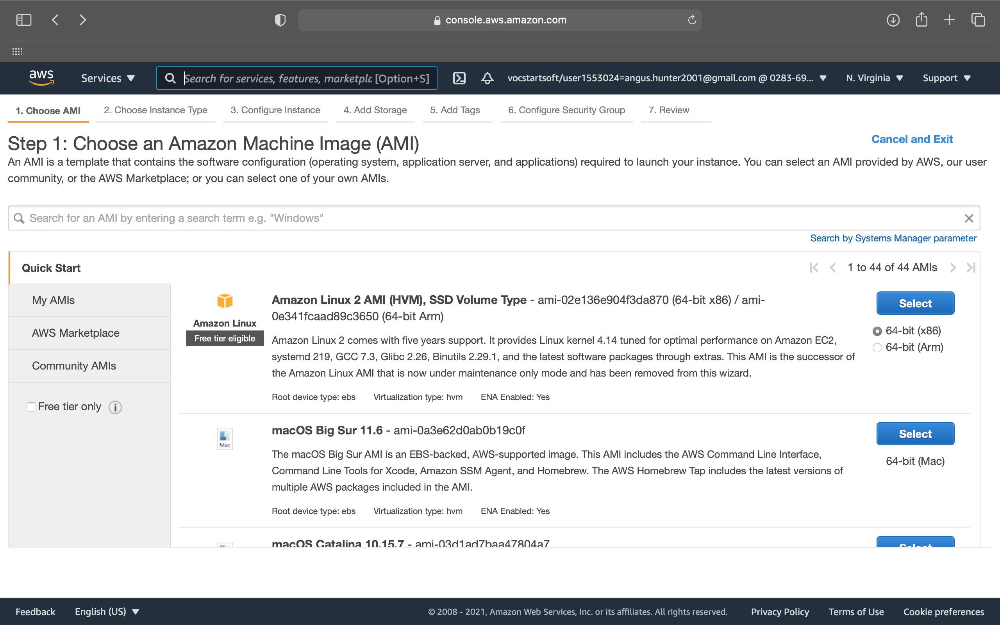
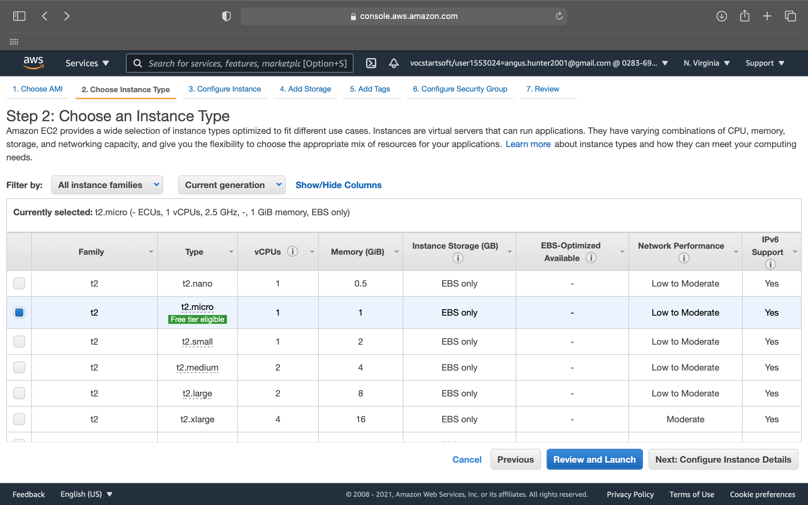
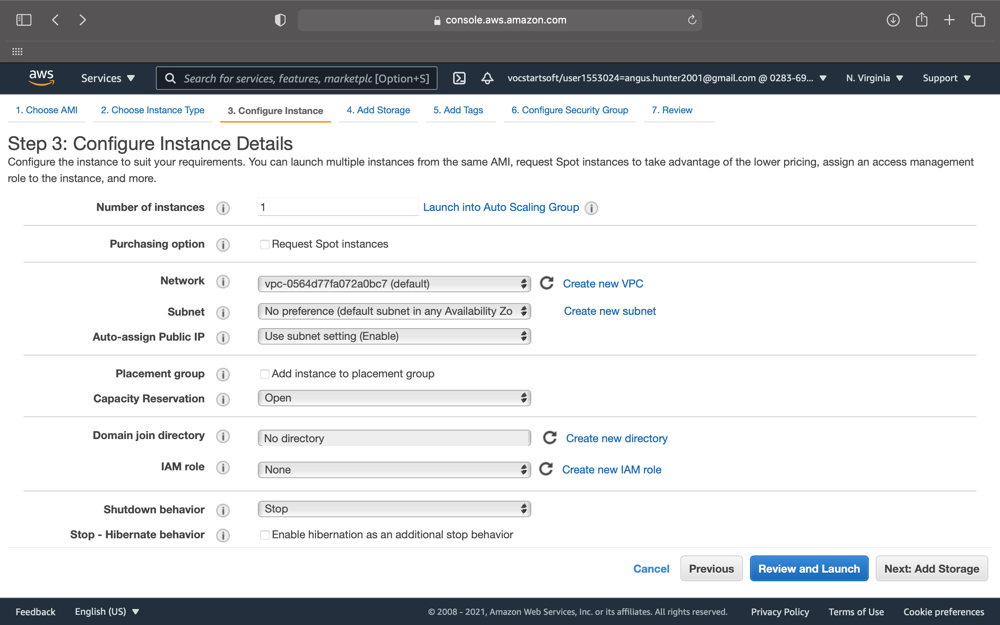
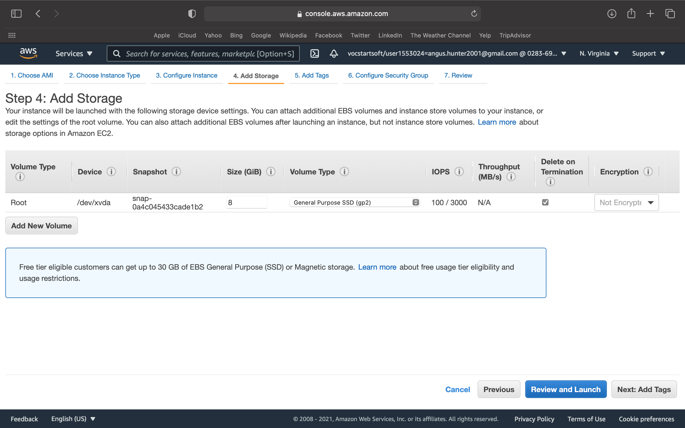
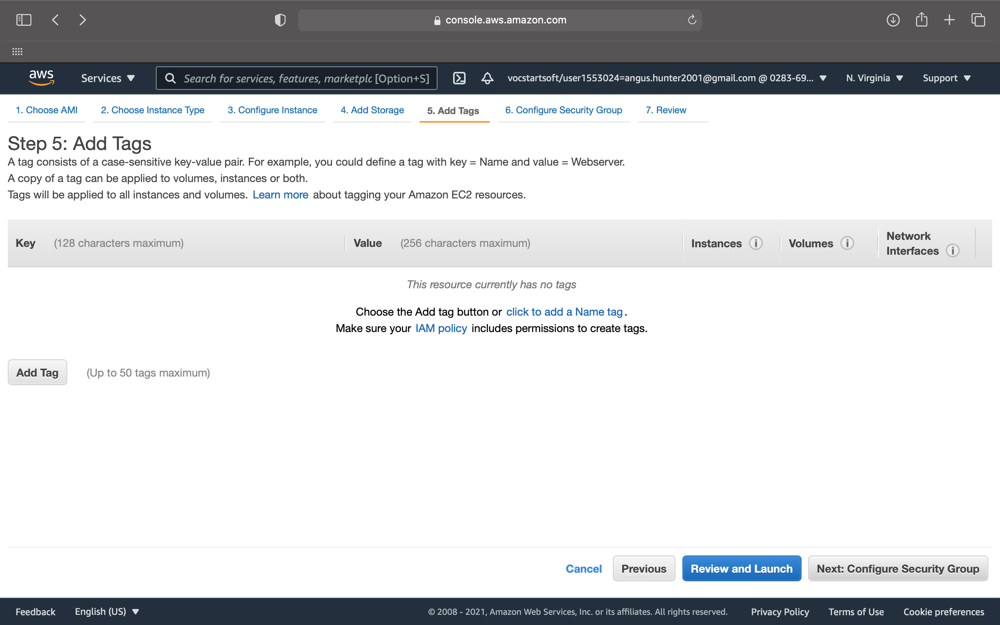
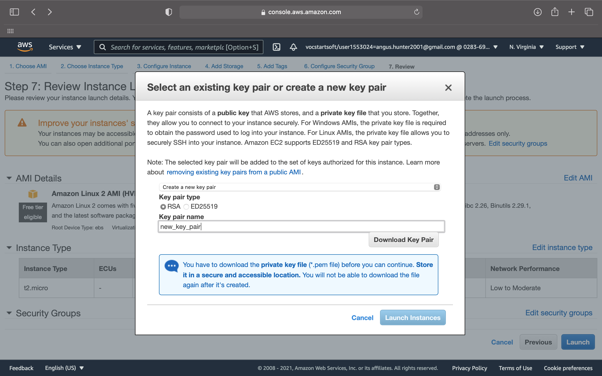
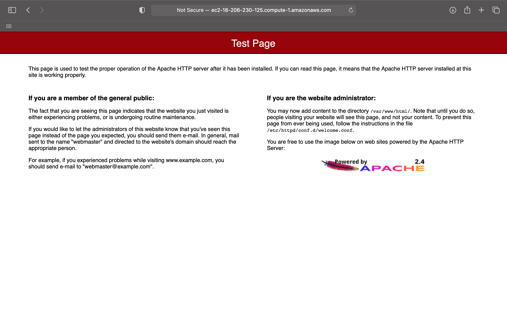
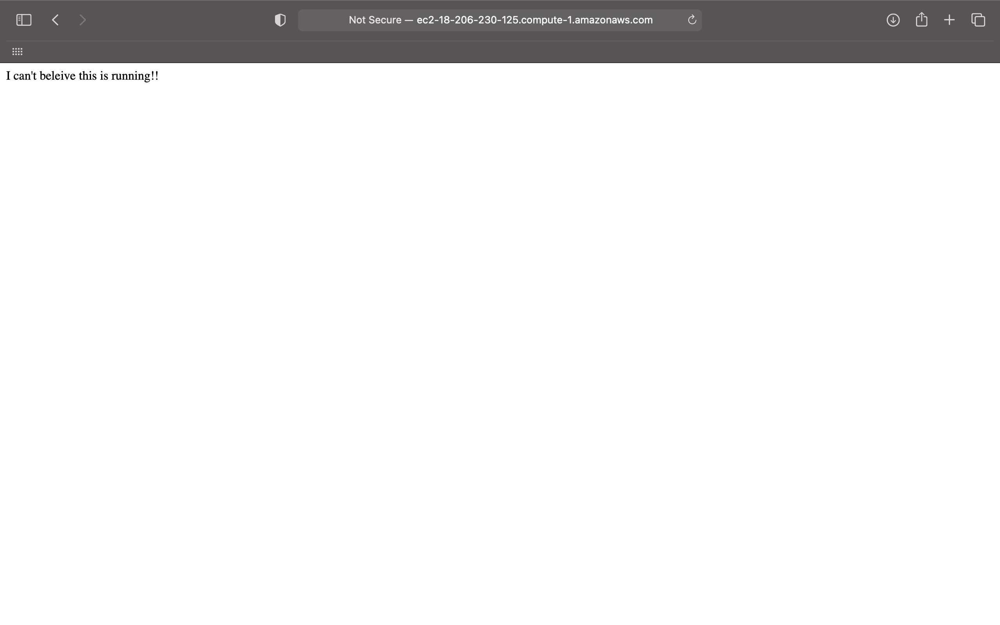

Log into your AWS account
Launch an EC2 instance...
Select the Amazon Linux 2 AMI
Choose a t2.micro instance type
Leave configuration instance details as default
Leave storage as default
Leave tags as default
Add two rules on Configure Security Group
Click review and launch and then launch
Choose create a new key pair and add a name
Download the key pair
Click launch instance
🎉 congrats! you have launched an EC2 instance 🎉
Open terminal and ssh into your ec2 instance using :
ssh -i "your-key_pair.pem" ec2-user@"Public ipv4 DN"
Elevate your privileges
sudo su
Update all of the packages on the instance
yum update -y
Install an apache webserver
yum install httpd -y
Start the webserver
service httpd start
Check if the server is working
If you see this page then Congrats 🎉
Navigate to this directory :
cd /var/www/html
Create an index.html file :
nano index.html
Add some content to your file :
<html>
<body>
<p>I can't beleive this is running!!</p>
</body>
</html>
Save the file.
Check your new webpage :
If you see your page then Congrats 🎉
You have deployed a Static Website on AWS EC2
